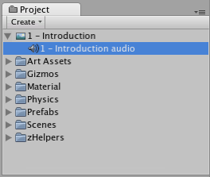

Movie Textures
Note: MovieTexture is due to be deprecated in a future version of Unity. You should use VideoPlayer for video download and movie playback.
Movie Textures are animated Textures that are created from a video file. By placing a video file in your project's Assets Folder, you can import the video to be used exactly as you would use a regular Texture.
Video files are imported via Apple QuickTime. Supported file types are what your QuickTime installation can play (usually .mov, .mpg, .mpeg, .mp4, .avi, .asf). On Windows, movie importing requires Quicktime to be installed. Download Quicktime from Apple Support Downloads.
Properties
The Movie Texture Inspector is very similar to the regular Texture Inspector.

| Property: | Function: |
|---|---|
| Aniso Level | Increases Texture quality when viewing the texture at a steep angle. Good for floor and ground textures |
| Filtering Mode | Selects how the Texture is filtered when it gets stretched by 3D transformations |
| Loop | If enabled, the movie will loop when it finishes playing |
| Quality | Compression of the Ogg Theora video file. A higher value means higher quality, but larger file size |
Details
When a video file is added to your Project, it will automatically be imported and converted to Ogg Theora format. Once your Movie Texture has been imported, you can attach it to any GameObject or Material, just like a regular Texture.
Playing the Movie
Your Movie Texture will not play automatically when the game begins running. You must use a short script to tell it when to play.
// this line of code will make the Movie Texture begin playing
((MovieTexture)GetComponent<Renderer>().material.mainTexture).Play();
Attach the following script to toggle Movie playback when the space bar is pressed:
public class PlayMovieOnSpace : MonoBehaviour {
void Update () {
if (Input.GetButtonDown ("Jump")) {
Renderer r = GetComponent<Renderer>();
MovieTexture movie = (MovieTexture)r.material.mainTexture;
if (movie.isPlaying) {
movie.Pause();
}
else {
movie.Play();
}
}
}
}
For more information about playing Movie Textures, see the Movie Texture Script Reference page
Movie Audio
When a Movie Texture is imported, the audio track accompanying the visuals are imported as well. This audio appears as an AudioClip child of the Movie Texture.

To play this audio, the Audio Clip must be attached to a GameObject, like any other Audio Clip. Drag the Audio Clip from the Project View onto any GameObject in the Scene or Hierarchy View. Usually, this will be the same GameObject that is showing the Movie. Then use audio.Play() to make the the movie's audio track play along with its video.
iOS
Movie Textures are not supported on iOS. Instead, full-screen streaming playback is provided using Handheld.PlayFullScreenMovie.
You need to keep your videos inside the StreamingAssets folder located in the Assets folder of your project.
Unity iOS supports any movie file types that play correctly on an iOS device, implying files with the extensions .mov, .mp4, .mpv, and .3gp and using one of the following compression standards:
- H.264 Baseline Profile Level 3.0 video
- MPEG-4 Part 2 video
For more information about supported compression standards, consult the iPhone SDK MPMoviePlayerController Class Reference.
As soon as you call Handheld.PlayFullScreenMovie the screen will fade from your current content to the designated background color. It might take some time before the movie is ready to play but in the meantime, the player will continue displaying the background color and may also display a progress indicator to let the user know the movie is loading. When playback finishes, the screen will fade back to your content.
The video player does not respect switching to mute while playing videos
As written above, video files are played using Apple's embedded player (as of SDK 3.2 and iPhone OS 3.1.2 and earlier). This contains a bug that prevents Unity switching to mute.
The video player does not respect the device's orientation
The Apple video player and iPhone SDK do not provide a way to adjust the orientation of the video. A common approach is to manually create two copies of each movie in landscape and portrait orientations. Then, the orientation of the device can be determined before playback so the right version of the movie can be chosen.
Android
Movie Textures are not supported on Android. Instead, full-screen streaming playback is provided using Handheld.PlayFullScreenMovie.
You need to keep your videos inside the StreamingAssets folder located in the Assets folder of your project.
Unity Android supports any movie file type supported by Android, (ie, files with the extensions .mp4 and .3gp) and using one of the following compression standards:
- H.263
- H.264 AVC
- MPEG-4 SP
However, device vendors are keen on expanding this list, so some Android devices are able to play formats other than those listed, such as HD videos.
For more information about the supported compression standards, consult the Android SDK Core Media Formats documentation.
As soon as you call Handheld.PlayFullScreenMovie the screen will fade from your current content to the designated background color. It might take some time before the movie is ready to play but in the meantime, the player will continue displaying the background color and may also display a progress indicator to let the user know the movie is loading. When playback finishes, the screen will fade back to your content.